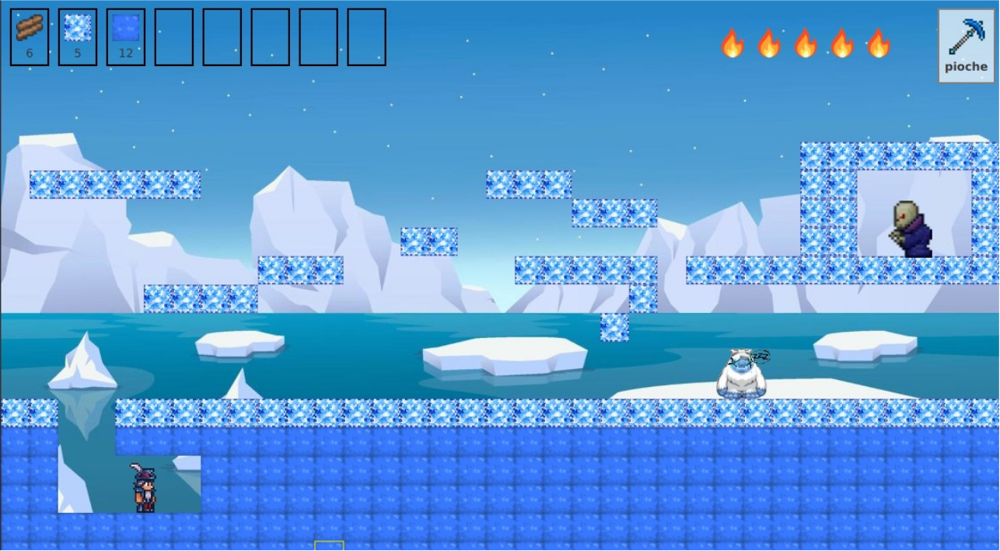

JavaFX · MVC
Jeu type Terraria
Développement d’un jeu inspiré de Terraria en JavaFX, avec une architecture MVC, la gestion des collisions et de la gravité.

Description
Le projet demandait de gérer un environnement de jeu, les déplacements et les interactions entre les éléments.
L'utilisation de MVC m'a également amené à séparer les différentes responsabilités du programme.
Travail réalisé
- Architecture MVC
- Gestion des déplacements
- Gestion de la gravité
- Détection des collisions
- Organisation du code avec des design patterns
- Création de l’interface JavaFX
Apprentissages critiques mobilisés
Ces apprentissages critiques sont ceux que je peux illustrer à travers ce projet. Ils sont également reliés aux autres projets dans la page Compétences.
Conception des différentes parties de l’application et implémentation en Java.
Création de l’interface du jeu avec JavaFX.
Séparation des responsabilités avec MVC.
Gestion des déplacements, de la gravité et des collisions.
Organisation des éléments nécessaires au fonctionnement du jeu.
Preuve de progression
Je maîtrisais déjà la programmation objet, mais la structuration d'une application plus importante était moins naturelle.
Ce projet m'a permis de mieux structurer une application, de raisonner sur plusieurs interactions simultanées et d'appliquer MVC sur un projet plus conséquent.
Mobiliser ces connaissances dans un projet concret, expliquer mes choix techniques et produire une solution fonctionnelle adaptée au problème posé.